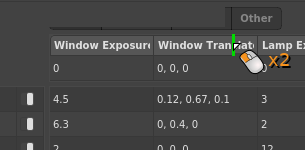
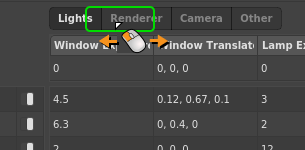

Spreadsheet Node¶
The Spreadsheet node (Utility > Spreadsheet) provides a tabular interface for mapping the values of one or more plugs to specific conditions in the graph. When one of the conditions is met, the spreadsheet applies all the values tied to that condition.
Unlike spreadsheet tools found in other applications, the Gaffer spreadsheet isn’t designed to adjust the same plug on multiple nodes at the same time. Instead, each column connects to an individual plug on a specific node, allowing you to easily vary its value based on the current Context. This makes Spreadsheets similar to the Random or Expression nodes, both in how they are created and what they affect. The main difference is that the table-based interface of the spreadsheet simplifies the management of a range of potential values across multiple plugs.
Figure 1. The Node Editor acts as the Spreadsheet node’s editable interface.
A spreadsheet is most useful when you need to map different plug values to Context Variable values. It can save you from having to fork a network multiple times with the same type of node with varying values, or from scripting large numbers of Context-conditional statements in one or more Expression nodes.
In production environments, spreadsheets are particularly effective at managing multi-render and multi-shot graphs while keeping them simple and easy to maintain. In a multi-shot rendering graph, a common temptation is to branch the graph, with separate render options nodes for each shot. But to save space and complexity, you could instead use a single branch and vary the node with a Spreadsheet node.
{kind=link}
Figure 2. Two graphs that vary render options per shot. The graph on the left forks separate branches and options nodes for each shot, while the graph on the right uses a single branch and a Spreadsheet node.
Mechanics¶
{kind=link}
On a spreadsheet, each column drives a plug in the graph. Each row consists of a string pattern, an enabled switch, and a plug value per column. The selector is a string that is checked against each pattern. If the selector matches a pattern, the respective values in that pattern’s row apply to their connected plugs.
During processing, the Selector plug undergoes expansion, substituting any Context Variables enclosed in ${} using standard string substitution syntax. Any non-string values, such as the built-in ${frame}, are also substituted as strings. Alternatively, the selector could consist only of plain text, for example a multi-part string composed by an Expression node elsewhere in the graph. The expanded string is then matched against each pattern using standard Gaffer pattern matching (*, ?, [ABC], [!ABC], [A-Z], [!A-Z]), from top row to bottom row. Finally, the first enabled row with a pattern that matches the pattern has the values in its row applied to the respective connected plugs.
The first row is called Default, and has no pattern. This is the fallback row that applies when all of the patterns fail to match the selector.
Tip
Because rows are matched from top to bottom, when matching both specific and general cases in the same spreadsheet, you must order the rows from most specific to least specific. For example, if row A has pattern /assets/robotA, row B has /assets/robotB, and row C has /assets/robot*, place row C last. Otherwise, when they match, the general case will be selected over the specific cases.
Rows can be disabled. A disabled row will be ignored during selector matching.
Individual cells within rows can also be disabled. If a row applies, any disabled cells in it fall back to the Default row’s values. Only the whole cell can be disabled: you cannot selectively disable elements of a connected vector or compound plug.
A Spreadsheet node’s connections to other nodes are visualized in the Graph Editor like so:
Figure 4. Auxiliary connections from a Spreadsheet node to its connected nodes in the Graph Editor.
Since spreadsheets connect to plugs, once a column has been connected to a plug, that plug’s value can only be adjusted from the spreadsheet’s interface.
Instructions¶
Creating a Spreadsheet node from a plug¶
The easiest way to create a Spreadsheet node is to initialize it from a plug you want to drive on an existing node, similar to how you would for an Expression or Random node.
To create a Spreadsheet node from an existing node’s plug:
- Select the existing node.
- In a Node Editor, right-click the target plug, then select Create Spreadsheet… from the context menu.
A Spreadsheet node will be added next to the existing node, and a new Node Editor window that is focused on it will open. The first column will be connected to the target plug. When editing the column’s cells, they will imitate the plug’s interface, including multi-element plugs, enabled switches, color previews and pickers, etc.
Connecting plugs to a Spreadsheet node¶
There are quick methods for connecting a plug from a node in the graph to an existing Spreadsheet node.
To drive a plug from an existing Spreadsheet node, select the target node, then, in a Node Editor, perform one of the procedures below based on the target plug’s contents.
Basic plug¶
{kind=link}
Right-click the plug’s value or label, then select a spreadsheet from the Add to Spreadsheet sub-menu.
Vector plug, whole¶
{kind=link}
Right-click the plug’s label, then select a spreadsheet from the Add to Spreadsheet sub-menu.
Vector plug, element¶
{kind=link}
Right-click the element, then select a spreadsheet from the Add to Spreadsheet sub-menu.
Compound plug¶
{kind=link}
Right-click the plug’s label, then select a spreadsheet from the Add to Spreadsheet (
If the compound plug has an enabled switch, the switch will be tied to the cell’s enabled state: disabling the cell disables the switch. This is to prevent the confusion that would arise from overlapping enabled states. A compound plug cell can be disabled in the Default row, letting you disable the plug when none of the rows apply.
{kind=link}
Tweak plug¶
{kind=link}
Right-click any editable element of the tweak plug, then select a spreadsheet from the Add to Spreadsheet (Tweak) sub-menu.
Once connected, the corresponding column will imitate the tweak plug’s elements, including the enabled switch and the tweak mode.
The enabled switch is tied to the cell’s enabled state: disabling the cell disables the tweak. A tweak plug cell can be disabled in the Default row, letting you bypass the tweak entirely when none of the rows apply.
Working with a spreadsheet¶
The spreadsheet generally behaves like a traditional ‘office’ spreadsheet application:
- Single-click a cell to select it.
- Double-click a cell to edit its value.
- Use the arrow keys and Return to navigate/edit cells.
- Shift/Ctrl click to extend the selection to cover multiple cells.
When multiple cells are selected, they can be copied and pasted between rows, columns or even different spreadsheets. If all the values are of the same type, the whole selection can be edited in one go to quickly change multiple values.
Note
Right-click menu items and keyboard shortcuts always operate on the whole selection.
Disconnecting a plug from a spreadsheet¶
To disconnect a plug from a spreadsheet, right-click the plug’s column header, then select Delete Column from the context menu.
The column and all of its values will be removed, and the plug will be disconnected from the spreadsheet.
Disabling and enabling a cell¶
To disable a cell:
- Right-click it, then select Disable Cell from the context menu.
- Double-click the cell to edit it, then click .
- Single-click to select the cell, then press the D key.
To enable a cell:
- Right-click it, then select Enable Cell from the context menu.
- Double-click the cell to edit it, then click .
- Single-click to select the cell, then press the D key.
Note
If the affected plug is a compound or tweak plug, the enabled state of the cell is tied to the plug’s enabled switch. Disabling the cell disables the plug, and vice versa.
Setting up per-location variation¶
A Spreadsheet node can map plug values to specific locations in the scene, with the row patterns targeting their paths. This feature could be used to accomplish per-location changes, such as tweaking the intensities of a select number of lights, or toggling object ray visibility across a scene.
To set up a spreadsheet for per-location variation, set its Selector plug to ${scene:path}.
In a per-location network, many of the common node types you are likely to drive with the spreadsheet will require a filter node to function. Depending on the scope of the per-location changes, there are two ways you can set up the filter.
General case with location-specific exceptions¶
This setup is for when you want to broadly affect locations in a scene in the same way, with exception locations – such as toggling the ray visibility attribute of certain locations.
{kind=link}
Set up the node filters as normal, then define the values that apply to most of the locations in the spreadsheet’s Default row. Each exception can then be defined by an additional row, with its pattern determining the location path(s).
The filter can be any filter node/network. Note: You must ensure that the filters match any locations specified in the spreadsheet’s row patterns, or those rows will have no effect.
Location-specific values only, with no general case¶
This setup is for when you only want to affect a few locations in the scene, each with their own values – such as light or shader tweaks. In this case we connect the filter directly to the spreadsheet, so you will not need to manually keep the filter in sync with the spreadsheet rows. It is also more performant.
{kind=link}
The filter can only be a PathFilter node. The spreadsheet must be connected to the filter’s Paths plug (see instructions below). The paths in the spreadsheet’s row patterns will then drive the paths in the PathFilter node. The node then only affects locations explicitly matched by its rows. The values for each location you wish to affect are then defined by a row, with its pattern determining the location path(s). Note that with this setup, the Default row is only used to determine values for individually disabled cells on any given row.
To drive a PathFilter node’s paths with a Spreadsheet node:
- Select the PathFilter node.
- In the Node Editor, click , then select Create Spreadsheet… or select an existing Spreadsheet from the Connect to Spreadsheet sub-menu. The spreadsheet’s Selector plug will be filled with
${scene:path}. - In the spreadsheet interface, click
 to add a row, then insert the location’s path into the pattern. This also adds thethis pattern to the PathFilter’s paths list, since as they are connected.
to add a row, then insert the location’s path into the pattern. This also adds thethis pattern to the PathFilter’s paths list, since as they are connected. - Repeat step 3 for each location you wish to affect.
From here on, you will only be able to add paths to the filter by adding rows to the spreadsheet. If necessary, you can edit the patterns to include wildcards to match against multiple similar paths or children of this location.
Important
When a spreadsheet’s Selector plug consists of ${scene:path}, row patterns will use the PathFilter’s wildcard matching logic instead of the more typical string matching rules. This means that * will match immediate children only, and ... will match all grandchildren.
Instead of manually typing or copy-pasting paths into patterns, you can use a shortcut to quickly add rows based on locations:
- Select the Spreadsheet node, or open a new Node Editor for it.
- Select one or more locations in the Hierarchy View.
- Click and drag the selection from the Hierarchy View onto in the Node Editor.
For each dragged location, a new row will be added, with its pattern consisting of the scene path.
Displaying the Spreadsheet node’s name in the Graph Editor¶
To save space, the Spreadsheet node’s name is hidden by default in the Graph Editor, and it appears like a Dot or Expression node with the label #.
To display a Spreadsheet node’s name in the Graph Editor:
- In the Graph Editor, right-click the node.
- Select Show Name from the context menu.
The node will assume the height of a normal node, with enough width to encompass the full text of its name.
Managing patterns¶
Patterns can be resized, but not reordered.
Resizing a pattern¶
Patterns can have one of three preset widths:

To resize a pattern, right-click the pattern, then select Width > Half, Single, or Double.
Managing columns¶
Columns can be renamed, resized and reordered.
Renaming a column¶
To rename a column:
- Right-click the column header, then select Set Label…. The Set Label dialog will appear.
- Type a new column name, then click Set.
Resizing a column¶
Columns can either have automatic width based on their name, or manual width:
Automatic column width: Double-click the column header’s right edge.
Manual column width: Click and drag the column header’s right edge.
Reordering columns¶
To reorder a column, click and drag its label left or right.
Managing sections¶
Columns can be organized into sections. Sections appear as tabs above the columns.
When one or more sections exist in a spreadsheet, any unorganized columns are placed into a default Other section. Further, when adding a new plug to the spreadsheet, you will need to choose a destination section for it.
Creating a section¶
To create a section and add a column to it:
- Right-click the column header, then select Move to Section > New…. The Move to Section dialog will appear.
- Type a section a name, then click Move.
To add a plug to a spreadsheet and place it in a section:
- Select the target node.
- In a Node Editor, right-click the plug value or label, as appropriate.
- From the context menu, select Add to Spreadsheet > [spreadsheet name] > [section name].
Renaming a section¶
To rename a section:
- Right-click its label, then select Rename from the context menu. The Rename section dialog will appear.
- Type a new section name, then click Rename.
Reordering a section¶
To reorder a section, click and drag its label left or right.
Transferring columns in a section¶
To transfer all columns from one section to another, right-click the source section’s label, then select Move Columns To > [destination section].
If you are transferring columns from the last remaining custom section to the Other section, all columns will be pooled together, and the section area will hide.
Deleting a section¶
To delete a section, right-click its label, then select Delete from the context menu. To delete all sections in the spreadsheet, select Remove Sectioning.
Example graphs¶
Per-location Transform Spreadsheet¶
This can be loaded in Gaffer from Help > Examples > Scene Processing > Per-location Transform Spreadsheet
In this example, an asset has multiple locations translated and rotated by one network of a Transform, PathFilter, and Spreadsheet node. This is accomplished by setting the Spreadsheet node up to apply transform values per location.
Per-location Light Tweak Spreadsheet¶
This can be loaded in Gaffer from Help > Examples > Rendering > Per-location Light Tweak Spreadsheet
In this example, multiple lights in a scene have their parameters tweaked by one network of a ShaderTweaks, PathFilter, and Spreadsheet node. This is accomplished by setting up the Spreadsheet node to apply tweak values per location.
Multi-shot Render Spreadsheet¶
This can be loaded in Gaffer from Help > Examples > Rendering > Multi-shot Render Spreadsheet
In this example, the graph is structured to handle the beauty render of multiple shots, each with slight differences in render settings. A Spreadsheet node drives the per-shot variations by modifying the renderer’s Options nodes in response to different values of a ${shot} Context Variable.